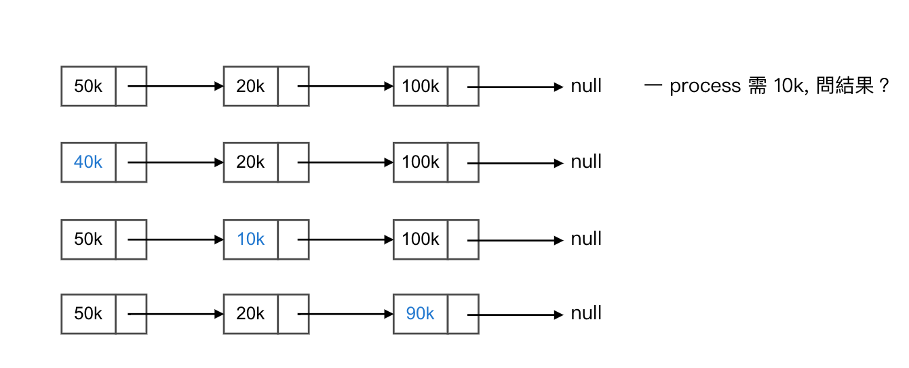
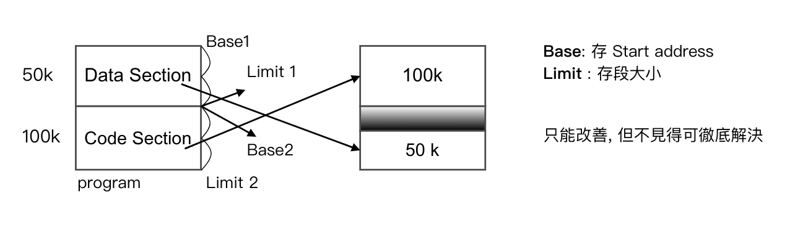
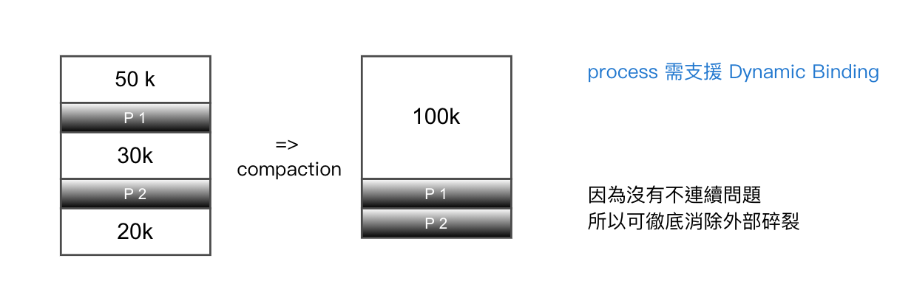
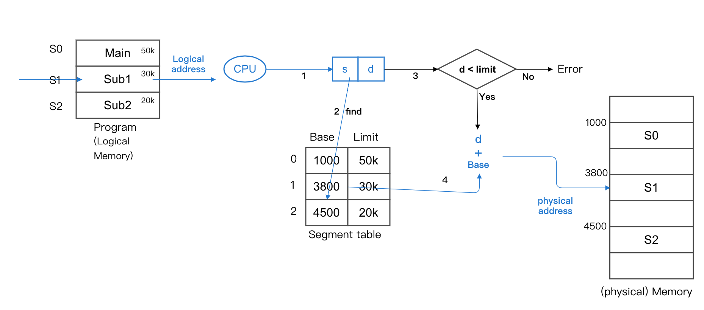
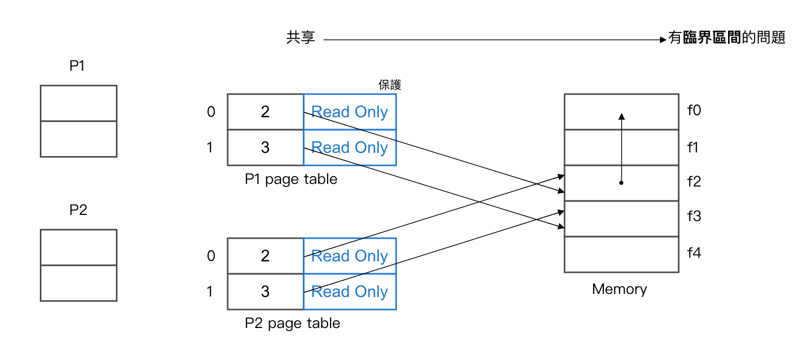

Chapter3-作業系統-記憶體管理
3.7 記憶體管理 (Memory Management)
圖：

Memory Allocation Strategy 記憶體配置策略
| 方法 | 定義 | Time | Space 使用率 |
|---|---|---|---|
| First Fit | 從頭找, 當 free block size >= n, 即可配置 | 佳 | 佳 |
| Best Fit | 從頭到尾, 找出所有符合 free block size >= n, 且差異小者 | 差 | 佳 |
| Worst Fit | 從頭到尾, 找出所有符合 free block size >= n, 且差異大者 | 差 | 差 |
- Ex: 
First Fit 的小問題
經長期配置後, 前面的片段都會只剩下一小部分, 後續的 search 每次皆須經過
=> Solution: 採用 "Next Fit"
Def: 利用 First Fit 概念, 但會從 上次配置的下一個節點開始 search
Memory 中常發生的問題
- 外部碎裂：External Fragmentation
Def: 指 process 所需的 Memory 大小小於 memory 總可用空間, 但卻不能配置 (因為空間不連續, 空間夠但不能給)
Solution:- Multiple Base/Limit 暫存器
- Compaction 壓縮
- Page Memory Management 分頁式
- 內部碎裂：Internal Fragmentation
Def: 給予的 Memory 大小較 process 所需空間大 (給太多, 你不用別人也不能用), 造成空間上的浪費
Solution:- Segment Memory Management 分段式
Multiple Base/ Limit register set. 多重基底限制暫存器

Compaction 壓縮
-
圖：
-
困難：
- 壓縮策略不易制定
- Process 皆需支援 Dynamic Binding (只要一 process 不支援, 則無法採用)
Paged Memory Management 分頁式
-
觀念：
- Physical memory 視為一組頁框 (frame) 之集合, 各 frame 大小一致
- Logical memory 視為一組頁面 (page) 之集合, "page size = 一 frame size"
-
圖：

-
配置策略：
- Page 間採 "不連續" 存放
- Process 為 n 個 page 時, 當 free frames >= n 個即可配置 (No 外部碎裂, 夠就一定可以給)
- O.S. 替各 process 準備一 page table, 存放 page 跟 frame 之對應
-
例：一 program = 19k, frame size = 4k, 則
- 需多少 page?
- 內部碎裂 = ?
- Page Table 的 entry size = 4 bytes, 問 Page Table 大小 ?
Sol:- 5 個, 需整數
- 5 * 4k = 20k, 20k - 19k = 1k
19k -> page size = 4k,5 * 4 bytes = 20 bytes
Logical address 對應 Physical address 的方式
- 圖：

- Ex: 8 frames, each frame size = 4, 一 process 的 Page Table 如下：問
- logical address 7 跟 13 的 physical address = ?
- logical 跟 physical address 表示需幾 bits ?
Sol: 

Page table 的存放製作方式
- 存 register
- 優點：速度快
- 缺點：容量大, 不適用 register 小
- 存 memory
- 優點：容量大, 適用
- 缺點：每次需做 2 次的 memory 存取 (第一次抓 P.T, 第二次抓 data)
- 作法：

- TLB 方式 Translation look-aside Buffer
- 由高速的關聯是暫存器組成
- 其各個的內容為：
- key: 存 page number (p)
- value: 存 frame number (f)
- 只存常用的 p, f 之對應 (目前執行中的 process 方可存入 TLB 之中) (當如果只要有 process 更換或做了 context switching, TLB 內容需全部 refresh)
- 採 TLB 之 effect memory access time 有效記憶體存取時間
- 公式：
h * (ta + ma) + (1 - h) * (ta + 2ma)h * (ta + ma)為命中所需時間(1 - h) * (ta + 2ma)為 沒命中- h = hit ratio
- ta = TLB access time
- ma = Memory access time
- Note:
h * (ta + ma) + (1 - h) * (ta + 2ma)=> 4-level page table
- 公式：
Segment memory management 分段式記憶體管理
- 觀念：
- 將 logical memory 視為一組 segment 之集合, 各 segment 大小不一致
- 和 user 對 memory 的看法一致, segment 可能是 main, subroutine...等
- 圖：
- 配置策略：
- Segment 之間採不連續性存放
- 單一 Segment 採 "連續性"配置 (有外部碎裂)
- O.S. 會替各 process 準備一 Segment Table, 其中
- Base: 存段的起始位址
- Limit: 段的大小
Summary
| 分析 | Paged | Segment |
|---|---|---|
| 優點 | No 外部碎裂 | No 內部碎裂 |
| 缺點 | 有內部碎裂 | 有外部碎裂 |
-
相同點:
- 支援 Memory 共享
- 支援 Memory 保護
- 支援 dynamic loading, linking, binding (動態繫結, 在執行期間可動態去翻轉記憶體位置)
- 需額外的 hardware support
- 執行較慢 (因為 logical -> physical address)
-
圖：
Compare
| Paged | Segment |
|---|---|
| No 外部碎裂, 有內部碎裂 | No 內部碎裂, 有外部碎裂 |
| Page size 一致 | Segment 大小不一致 |
| 和 user 看法不一致 | 較一致 |
| 需給單一量的 logical address | 需給 s, d (2 個量) |
| 不需做 d < limit 之 check | 需 check d < limit |
| Memory 共享, 保護, 較不易 | 較容易 |
Page segment memory management 分頁是分段記憶體管理
- 觀念： 先分段, 在分頁 -> 最終存 page
- 圖：

- 優點：
- No 外部碎裂
- 單一段可以 "不連續性存放"
- 缺點：
- 有內部碎裂
- Table size 相當大 (因為 Segment Table 及 Page Table 皆需)